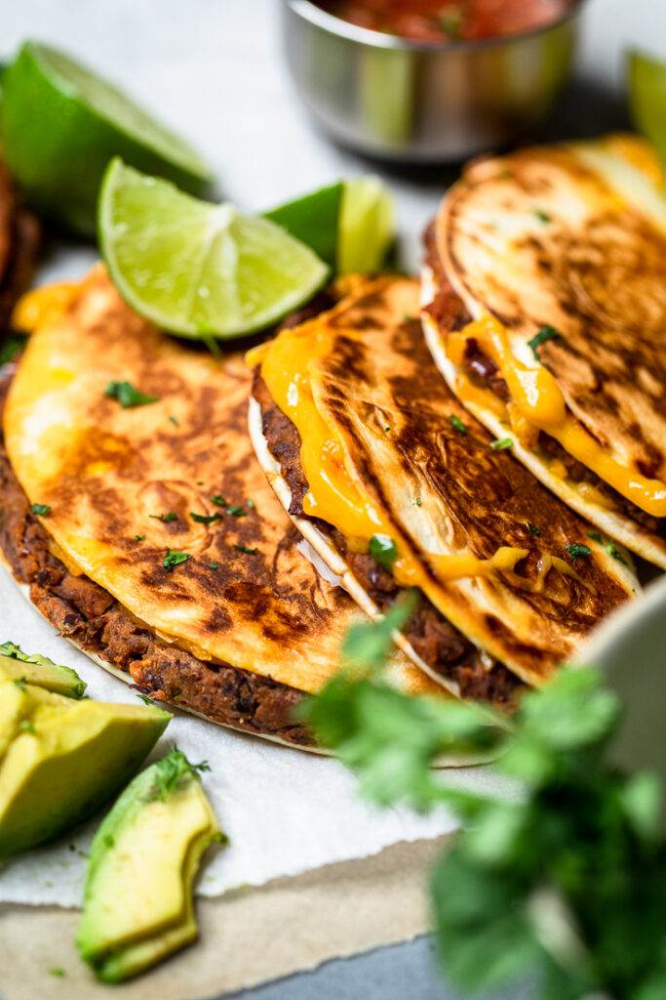

Crispy Cheesy Black Bean Tacos

Description
These Easy Cheesy Crispy Vegan Black Bean Tacos are one of the fastest vegan meals that you can create while be loaded with flavor! You’ll make them again and again!
If you are looking for a super quick and simple vegan dinner idea, then you are going to absolutely love these Easy Cheesy Crispy Vegan Black Bean Tacos. Even though that’s a mouthful to say, you only need 6 ingredients! Just 6! There’s more words in the title than ingredients needed.
Ingredients
- 1 14oz can black beans, rinsed and drained
- ½ cup salsa
- 1-2 tsp taco seasoning
- 6 small flour tortillas
- 1 cup vegan shredded cheese, divided
- vegan butter or oil
Steps
- In a food processor blend the beans, salsa, and taco seasoning until combined (until a similar texture to refined beans).
- In a skillet over medium heat add a teaspoon oil or vegan butter. When hot, add the black bean mixture in and cook it to heat it through, about 3-5 mins. Remove from heat.
- When ready, spoon about ⅙th of the mixture onto 1 half of a small flour tortilla. Spread it out from side to side with a spoon. Add ⅙th of the vegan cheese, then fold it closed. Repeat with remaining tacos.
- Heat a little oil or vegan butter in a skillet over medium heat. Add taco in to fry about 1-2 mins on each side until golden brown and crunchy. Repeat process with oil/butter and tacos until you've done them all. Serve with desired toppings